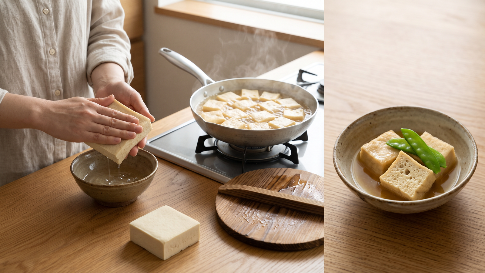

高野豆腐はなぜだしを吸うの？ひと手間でじゅわっと味を含ませるコツ
「同じ豆腐なのに、どうして高野豆腐だけ煮汁がじゅわっとあふれるほど味がしみるのかしら？」と不思議に思ったことはありませんか。一方で、「なんだか中心が白っぽくて味がなじんでいない」「まわりがポロポロ崩れてしまった」という経験がある方もいらっしゃるかもしれません。
高野豆腐の中には、小さな穴が無数に空いていて、そこにだしが入り込むことで煮汁をたっぷり含みます。そして、煮る前に両手でやさしく水分を押し出しておくのが、いつものおうちごはんでできる大切なひと手間です。
なぜだしをたっぷり吸うの？
豆腐を凍らせると、中の水分が凍って氷の粒ができます。その凍った豆腐が溶けると、氷のあった場所がすっぽり空いて、全体がスポンジのような状態になります。その空いた穴に、煮汁やだしがすっと入り込みます。
昔から作られている宮城県の伝統食品「岩出山凍り豆腐」も、形がきれいに整ったまま煮崩れせず、だしがよくしみ込むのが特徴です（農林水産省「にっぽん伝統食図鑑 凍り豆腐（こおりどうふ）」）。この岩出山凍り豆腐は、豆腐をじっくり凍らせてから水にさらして溶かし、水分を絞ってアクを抜き、もう一度凍らせて乾燥させて作られています（農林水産省「地理的表示 登録番号第65号 岩出山凍り豆腐」）。
また、戻すときの温度もちょっとしたポイントです。早く戻したいからと熱湯をかけてしまうと、ひびが広がって割れやすくなります。パッケージに書いてあるお湯や水の温度をきちんと守りましょう。
台所のスポンジをイメージしてみる
台所で使うスポンジを思い出してみてください。たっぷりと水を含んだままのスポンジは、新しい水をうまく吸い込めませんよね。ぎゅっと絞って水を出してから別の液体につけると、一気に吸い込みます。
高野豆腐も同じように、戻し水を一度しっかり押し出してからお鍋に入れると、空いた穴の中に煮汁が入りやすくなると考えられます。
基本の含め煮の作り方
家庭で試しやすいように考えた一例です。ぜひ今夜のおかずに試してみてください。
材料（2人分）
* 高野豆腐：2枚 * だし：400ml * 砂糖：大さじ1と1/2 * みりん：大さじ1 * 薄口しょうゆ：大さじ1 * 塩：少々
手順
- 高野豆腐は袋の表示どおりに戻す。熱湯ではなく、表示の温度のお湯か水を使う。商品によっては戻さずに煮汁へ入れるものがあるので、その場合は表示に従う。
- 戻したら両手で挟み、ぎゅっとねじらずに押して水気を出す。濁った水が出るときは、水を替えて押し洗いし、最後にもう一度しっかり押して水気を出す。
- 食べやすい大きさに切る。
- 鍋にだしと調味料を入れて煮立て、高野豆腐を並べる。落としぶたをして、弱火で10分ほど煮る。
- 火を止め、煮汁につけたまま冷まして味をなじませる。作り置きにするときは、室温に長く置かず、早く冷えるように浅い容器に移して粗熱を取り、冷蔵庫に入れる（厚生労働省「家庭でできる食中毒予防の6つのポイント」）。
ほかの乾物やお惣菜にも
この「水気を押し出してから味をつける」工夫は、ほかの食材にも応用できます。油揚げや厚揚げ、お麩、切り干し大根など、すき間のある食材を使うときも、戻したり油抜きをしたりしたあとに手のひらでやさしく押して水分を出してから、煮汁や調味料と合わせてみてください。味がなじみやすくなるはずです。
まとめ
高野豆腐が煮汁をよく吸うのは、凍って溶けたあとにできた無数の穴があるからです。熱いお湯を避けて表示どおりの温度で戻し、両手で挟んでしっかり水気を押し出してから煮汁へ入れる。この丁寧なひと手間を、ぜひ毎日の料理に取り入れてみてください。
---
参考資料
* 農林水産省「にっぽん伝統食図鑑 凍り豆腐（こおりどうふ）」 https://www.maff.go.jp/j/keikaku/syokubunka/traditional-foods/menu/kooridouhu.html * 農林水産省「地理的表示 登録番号第65号 岩出山凍り豆腐」 https://www.maff.go.jp/j/shokusan/gi_act/register/0065/pdf/0065_register.pdf * 厚生労働省「家庭でできる食中毒予防の6つのポイント」 https://www.mhlw.go.jp/www1/houdou/0903/h0331-1.html